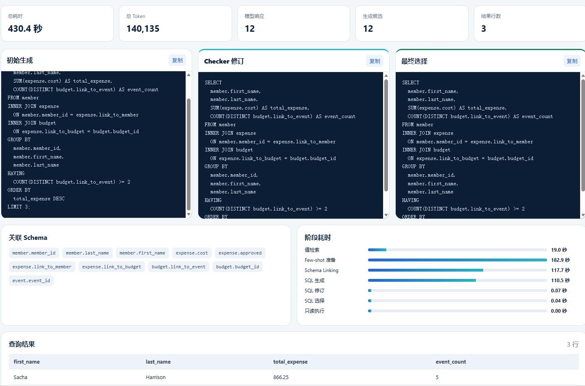

01 / 05
01 / 05AI AGENT · RAG · APPLICATION ENGINEERING
让 AI 从
回答问题
走向完成任务。
我是曹浩冉，围绕 Agent 编排、知识检索与业务系统集成，构建能够解释过程、约束行为并接受验证的 AI 应用。
SYSTEM / 01
INPUT真实业务问题
RECEIVEDORCHESTRATIONAgent 理解与决策
ROUTINGKNOWLEDGERAG / 证据
ACTION工具 / 审批
OUTPUT可追溯的结果
VERIFIEDDESIGNED TO BE TESTED ↗
我的关注点复杂流程中的可控 AI知识与业务数据的边界从原型走向可验证的工程实现
SELECTED WORK / 2026
项目实践.
五个项目，覆盖客户服务、科研协作、开发者工具与数据分析。点击案例了解业务问题、实现方式和当前边界。
01 / 05
02 / 05 03 / 05
03 / 05科研协作 · 个人原型
LabPilot
从组会纪要提取可追溯任务，汇集待办与进展生成有依据的周报草稿；支持按用户检索 Zotero 文献，邮件发送前需人工确认。
FastAPIVue 3RAGZotero MCP
 04 / 05
04 / 05review / pull-request
01 fetch_changes(pr_url)
02 triage_files(diff)
03 analyze_with_agent()
04 issue: potential null access
05 persist_review(results)
● REVIEW COMPLETE
开发者工具 · 本地项目
Code Review Agent
输入 GitHub PR 后获取并分流变更文件，交由 LangGraph 工作流逐文件分析；FastAPI 返回任务编号，Celery 异步执行并保存结构化审查结果。
LangGraphClaudeCeleryPostgreSQL
BEHIND THE WORK
不止于演示.
这些项目里的共同方法，是让模型输出能够连接证据、业务规则与可重复的检查。
01 / EVIDENCE
让回答有来源
检索结果保留出处与适用范围。缺少可信知识时，明确表达未知，而不是填补一个看似完整的答案。
02 / CONTROL
让操作有边界
涉及订单、退款或邮件等实际动作时，把身份、工具规则与人工确认放在执行路径里。
03 / VERIFICATION
让效果可复核
通过测试、评测样本与执行轨迹检查系统表现，同时写清演示数据和真实业务接入之间的界限。
PROJECT NOTES
项目背后的具体工作
DeepEye-SQL · 智能数据分析助手
在 开源 DeepEye-SQL 研究项目 的生成、修订与选择流程上，补上单题 SQLSkill、FastAPI + SSE 页面及 SQLite 只读执行边界，包括数据库注册、查询超时、结果行数和请求预算。固定 50 题、5 库的本地对照中，完整流程的集合式执行正确率为 76%，仅生成方案为 72%；样本有限，不是官方 BIRD 榜单成绩。交互案例预览展示三道历史实测题的阶段进度、三版 SQL、查询结果与用量；页面不会实时调用模型。实时提问服务目前仍是本地单用户演示。工程扩展源码已公开；上游算法与论文成果归原作者。
LabPilot
将组会纪要抽任务、四维待办与进展记录接成周报草稿流程；任务保留原文出处，周报对缺少记录的结论标记待补充。每位用户可绑定自己的只读 Zotero 凭证，发送邮件前必须确认草稿版本。项目仍是个人原型，邮件验收使用模拟发送；公开预览只使用固定示例数据，不连接真实模型、邮箱或 Zotero。体验示例数据预览 ↗ · 查看源码 ↗
Support Agent
本地新版使用 LangGraph 路由订单、退款、支付、FAQ 与转人工请求。FAQ 经范围过滤的 Milvus 检索与 Redis 缓存提供证据；演示订单从 SQLite 查询，退款和支付需人工审批，并记录幂等结果。会话与审批状态持久化，转人工工单支持处理，trace 关联检索、工具和业务结果。另有默认关闭的经验候选、审核与策略评测实验接口。线上 Streamlit 演示是旧版，不能代表本地新版；所有交易均为演示数据。
Code Review Agent
以 GitHub PR URL 为输入，获取变更文件后由 LangGraph 工作流决定分析顺序，逐文件生成问题类型、严重程度、行号与修改建议，再汇总并保存结果。FastAPI 提交任务，Celery 在后台执行，PostgreSQL 保存任务和审查记录。当前展示的是本地项目实现，未提供已验证的公开在线体验。
ABOUT THE BUILDER
把想法做成
可运行的系统。
我关注 AI Agent 在真实流程中的应用：何时检索、何时调用工具、何时请求人工确认，以及如何知道它是否真的做对了。
这份作品集展示当前项目实践与已知边界。项目仍在持续迭代，案例内容以各项目文档与演示环境为准。
返回顶部 ↑